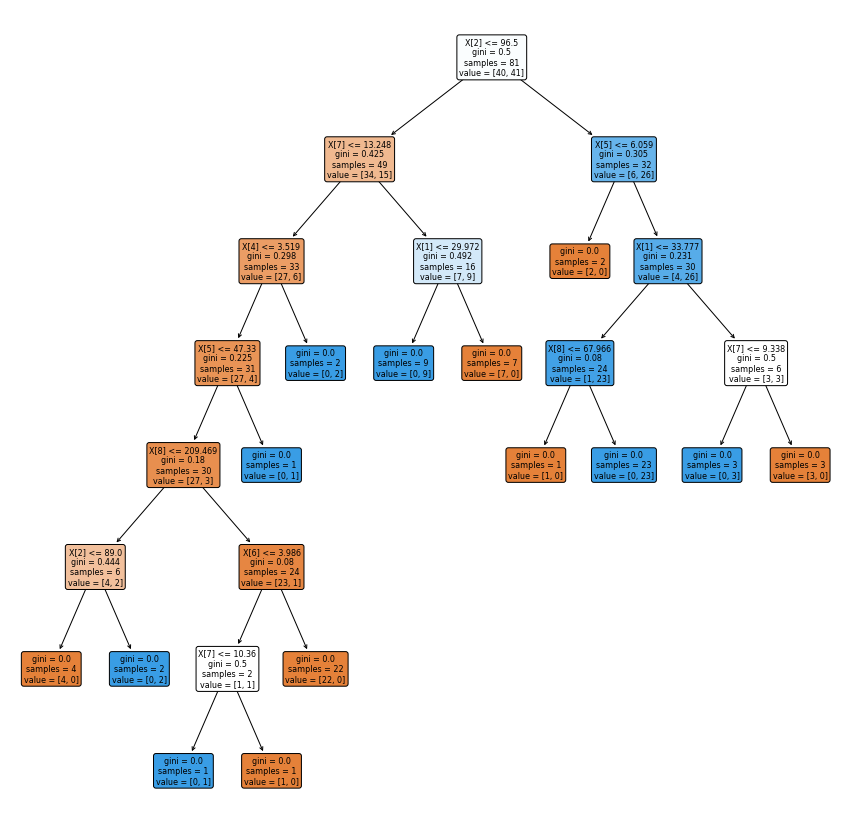

UTS
Contents
UTS#
Nama : Narulita Arien Pramesti#
NIM : 200411100065#
Kelas : Penambangan Data A#
Lakukan analisa terhadap data dengan menggunakan klasifikasi#
Metode KNN#
# Mengimport library
import pandas as pd
from sklearn.model_selection import train_test_split
from sklearn.neighbors import KNeighborsClassifier
df = pd.read_csv("https://raw.githubusercontent.com/narulitaap/datamining/main/dataR2.csv")
df.head()
| Age | BMI | Glucose | Insulin | HOMA | Leptin | Adiponectin | Resistin | MCP.1 | Classification | |
|---|---|---|---|---|---|---|---|---|---|---|
| 0 | 48 | 23.500000 | 70 | 2.707 | 0.467409 | 8.8071 | 9.702400 | 7.99585 | 417.114 | 1 |
| 1 | 83 | 20.690495 | 92 | 3.115 | 0.706897 | 8.8438 | 5.429285 | 4.06405 | 468.786 | 1 |
| 2 | 82 | 23.124670 | 91 | 4.498 | 1.009651 | 17.9393 | 22.432040 | 9.27715 | 554.697 | 1 |
| 3 | 68 | 21.367521 | 77 | 3.226 | 0.612725 | 9.8827 | 7.169560 | 12.76600 | 928.220 | 1 |
| 4 | 86 | 21.111111 | 92 | 3.549 | 0.805386 | 6.6994 | 4.819240 | 10.57635 | 773.920 | 1 |
# Melihat ukuran dataset
df.shape
(116, 10)
# Membagi data ke X dan Y
# X tanpa label
X = df.drop(columns=["Classification"])
X.head()
| Age | BMI | Glucose | Insulin | HOMA | Leptin | Adiponectin | Resistin | MCP.1 | |
|---|---|---|---|---|---|---|---|---|---|
| 0 | 48 | 23.500000 | 70 | 2.707 | 0.467409 | 8.8071 | 9.702400 | 7.99585 | 417.114 |
| 1 | 83 | 20.690495 | 92 | 3.115 | 0.706897 | 8.8438 | 5.429285 | 4.06405 | 468.786 |
| 2 | 82 | 23.124670 | 91 | 4.498 | 1.009651 | 17.9393 | 22.432040 | 9.27715 | 554.697 |
| 3 | 68 | 21.367521 | 77 | 3.226 | 0.612725 | 9.8827 | 7.169560 | 12.76600 | 928.220 |
| 4 | 86 | 21.111111 | 92 | 3.549 | 0.805386 | 6.6994 | 4.819240 | 10.57635 | 773.920 |
#y label saja
y = df["Classification"].values
y[0:116]
array([1, 1, 1, 1, 1, 1, 1, 1, 1, 1, 1, 1, 1, 1, 1, 1, 1, 1, 1, 1, 1, 1,
1, 1, 1, 1, 1, 1, 1, 1, 1, 1, 1, 1, 1, 1, 1, 1, 1, 1, 1, 1, 1, 1,
1, 1, 1, 1, 1, 1, 1, 1, 2, 2, 2, 2, 2, 2, 2, 2, 2, 2, 2, 2, 2, 2,
2, 2, 2, 2, 2, 2, 2, 2, 2, 2, 2, 2, 2, 2, 2, 2, 2, 2, 2, 2, 2, 2,
2, 2, 2, 2, 2, 2, 2, 2, 2, 2, 2, 2, 2, 2, 2, 2, 2, 2, 2, 2, 2, 2,
2, 2, 2, 2, 2, 2])
# Membagi data ke data test dan data training
X_train, X_test, y_train, y_test = train_test_split(X, y, test_size=0.20, random_state=0, stratify=y)
#Feature Scaling
from sklearn.preprocessing import StandardScaler
sc = StandardScaler()
X_train = sc.fit_transform(X_train)
X_test = sc.transform(X_test)
X_train[:5]
array([[-1.99870762e-01, 1.77497398e+00, 1.11147412e+00,
2.42579535e-01, 2.63712046e-01, 3.32084933e+00,
-3.53601251e-01, -7.98401203e-01, -8.96813736e-01],
[-2.61575829e-01, 1.92667044e+00, 2.16240100e-01,
6.71901217e-02, 2.71926419e-03, 5.62315407e-02,
1.30573410e+00, -3.89670515e-01, 4.67707681e-01],
[ 9.10820452e-01, -3.68794536e-01, -7.28729138e-01,
-6.76319466e-01, -5.30791475e-01, -6.07166943e-02,
3.19975082e+00, -9.39015325e-01, -3.99043511e-01],
[-3.84985964e-01, -1.69222255e+00, -1.81641684e-01,
-5.20238052e-01, -4.13823515e-01, -7.90474522e-01,
-6.57635110e-01, -7.58294756e-01, -1.26169663e+00],
[-1.18715184e+00, -8.29930211e-01, -1.07687570e+00,
-3.76893851e-01, -3.95202370e-01, -5.70764749e-01,
1.01859454e+00, -4.61398643e-01, -1.04901974e+00]])
# Membangun KNN Classifier
KNN = KNeighborsClassifier(n_neighbors = 5,metric = 'minkowski', p = 2)
KNN.fit(X_train,y_train)
KNeighborsClassifier()
KNN.predict(X_test)[0:5]
array([2, 2, 1, 2, 1])
# Memeriksa keakuratan model pada data uji
KNN.score(X_test, y_test)
0.9166666666666666
# Hasil Akurasi
from sklearn.metrics import *
import numpy as np
#Check Accuracy precision, recall, f1-score
print( classification_report(y_test, KNN.predict(X_test)) )
#Another way to get the models accuracy on the test data
print(F'Accuracy:',accuracy_score(y_test, KNN.predict(X_test)))
print(F'Precision:', precision_score(y_test, KNN.predict(X_test)))
print(F'Recall:', recall_score(y_test, KNN.predict(X_test)))
print(F'F1 Score:', f1_score(y_test, KNN.predict(X_test)))
#Check Roc Auc Score
print( F'Roc Auc Score:',roc_auc_score(y_test, KNN.predict(X_test)) )
print( F'Balanced Accuracy Score:',balanced_accuracy_score(y_test, KNN.predict(X_test)) )
print( F'Confusion Matrix:',confusion_matrix(y_test, KNN.predict(X_test)) )
print()#Print a new line
precision recall f1-score support
1 0.91 0.91 0.91 11
2 0.92 0.92 0.92 13
accuracy 0.92 24
macro avg 0.92 0.92 0.92 24
weighted avg 0.92 0.92 0.92 24
Accuracy: 0.9166666666666666
Precision: 0.9090909090909091
Recall: 0.9090909090909091
F1 Score: 0.9090909090909091
Roc Auc Score: 0.9160839160839161
Balanced Accuracy Score: 0.916083916083916
Confusion Matrix: [[10 1]
[ 1 12]]
Decission Tree#
#Mengimport Modul
import pandas as pd
from sklearn import tree
from matplotlib import pyplot as plt
from sklearn.tree import DecisionTreeClassifier
from sklearn import metrics
df = pd.read_csv("https://raw.githubusercontent.com/narulitaap/datamining/main/dataR2.csv")
df.head()
| Age | BMI | Glucose | Insulin | HOMA | Leptin | Adiponectin | Resistin | MCP.1 | Classification | |
|---|---|---|---|---|---|---|---|---|---|---|
| 0 | 48 | 23.500000 | 70 | 2.707 | 0.467409 | 8.8071 | 9.702400 | 7.99585 | 417.114 | 1 |
| 1 | 83 | 20.690495 | 92 | 3.115 | 0.706897 | 8.8438 | 5.429285 | 4.06405 | 468.786 | 1 |
| 2 | 82 | 23.124670 | 91 | 4.498 | 1.009651 | 17.9393 | 22.432040 | 9.27715 | 554.697 | 1 |
| 3 | 68 | 21.367521 | 77 | 3.226 | 0.612725 | 9.8827 | 7.169560 | 12.76600 | 928.220 | 1 |
| 4 | 86 | 21.111111 | 92 | 3.549 | 0.805386 | 6.6994 | 4.819240 | 10.57635 | 773.920 | 1 |
y = df["Classification"]
X = df.drop(columns=["Classification"])
# Split Data
# 70% training dan 30% test
X_train, X_test, y_train, y_test = train_test_split(X, y, test_size=0.3, random_state=1)
# Membangun decission tree menggunakan gini
clf = DecisionTreeClassifier(criterion="gini")
clf = clf.fit(X_train,y_train)
# Prediksi data test
y_pred = clf.predict(X_test)
# Mencari akurasi
print("Accuracy:",metrics.accuracy_score(y_test, y_pred))
Accuracy: 0.7714285714285715
# Visualisasi Decision Tree
plt.figure(figsize=(15,15))
#create the tree plot
a = tree.plot_tree(clf,
rounded = True,
filled = True,
fontsize=8)
#show the plot
plt.show()
